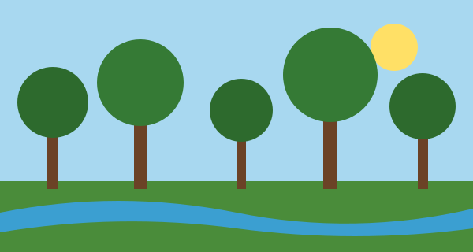

Regulação do clima
As florestas armazenam carbono, liberam vapor d'água na atmosfera e ajudam a regular a temperatura e as chuvas em escala regional.
Guardiões da Floresta
Bem-vindo! Este site apresenta, de forma introdutória, a Floresta Amazônica, as espécies que a compõem e as práticas de manejo florestal sustentável estudadas na Engenharia Florestal.

As florestas armazenam carbono, liberam vapor d'água na atmosfera e ajudam a regular a temperatura e as chuvas em escala regional.
A Amazônia abriga uma das maiores diversidades de plantas e animais do planeta. Cada espécie cumpre um papel no equilíbrio do ecossistema.
Madeira, frutos, castanhas e resinas podem ser aproveitados sem esgotar a floresta, desde que haja planejamento técnico e respeito aos ciclos naturais.
Cuidar da floresta hoje é garantir água, ar limpo e sustento para as próximas gerações.
Texto de autoria do grupo, inspirado nos Objetivos de Desenvolvimento Sustentável da ONU.
lang="pt-BR".Para saber mais sobre o tema, consulte o site do Ministério do Meio Ambiente (abre em nova aba).